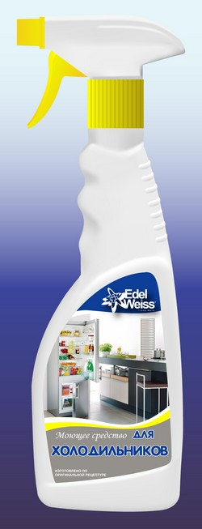

Универсальное моющее средство для холодильников
ПРЕДНАЗНАЧЕНО:
Для очистки внутренних и внешних пластиковых поверхностей холодильников; также применяется для очистки пластиковых поверхностей различных бытовых приборов.
ИЗГОТОВЛЕННО:
По оригинальной технологии. Не содержит сильных кислот, едких щелочей, что делает его применение безвредным и не требует специальных средств защиты. Не раздражает кожу рук, РН нейтрально.
ЭФФЕКТИВНО:
Устраняет органические загрязнения; не оставляет разводов, нейтрализует неприятные запахи и придает приятный аромат; экологически безопасно, не токсично; удобная упаковка (спрей) обеспечивает легкость в использовании и экономичность расхода.
СПОСОБ ПРИМЕНЕНИЯ:
Открыть флакон поворотом кончика распылителя. Нанести средство на сухую обрабатываемую поверхность. Через 25-30 секунд протереть сухой безворсовой салфеткой. При необходимости обработку повторить. Перед применением взболтать.
Объем:500мл

Универсальное моющее средство для Холодильника
Холодильник – незаменимый элемент любого дома. Чтобы продлить эксплуатационный срок холодильника, следует регулярно убирать внутреннюю поверхность от загрязнений продуктами, размораживать и удалять лед из морозильной камеры.
Очень важно придерживаться правил эксплуатации холодильника: не допускать высокой влажности внутри холодильника, правильно упаковывать продукты, проводить частую гигиеническую уборку. Например, старые модели требует частой разморозки, иначе они частично или полностью выходят из строя.
Уборку в холодильнике рекомендуется проводить сразу же после разморозки, примерно несколько раз в месяц. Необходимо вытянуть все полочки и контейнеры, нагреть их до комнатной температуры и тщательно отмыть. После этого принимайтесь за сам холодильник. Обычные, «народные» моющие средства для холодильника – пищевая сода с водой. Конечно, таким способом вы, возможно, добьетесь относительной чистоты, но для удаления многих пятен придется приложить немало усилий, в том числе физических. Поэтому стоит обратить внимание на современные моющие средства для холодильника, разработанные специально для легкой уборки, устранения органических загрязнений и неприятного запаха.
При выборе моющего средства не забывайте про несколько основополагающих правил: моющие средства для холодильника не должны содержать абразивных частиц (они могут повредить поверхность) и быть экологически – чистыми, ведь частое использование бытовой химии нередко приводит к появлению аллергической реакции и других, не менее неприятных последствий.